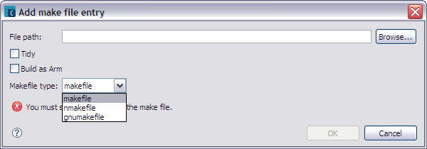

The Add Makefile entry dialog (figure 1) is used to add a makefile to the build process. Enter or browse to the make file in the File path field and, if desired, apply the Tidy attribute or specify the Build as ARM option to the make file.

Figure 1 - Add/Edit makefile entry
| Name | Function |
|---|---|
File path |
Type the path and filename for the makefile to create or click Browse to set a path. |
Tidy |
Specify the tidy attribute if the release that an .mmp file defines is internal to your component and not required by other components or for your component to execute. |
| Build as ARM | Specifies the build_as_arm statement, which instructs an ARMV5 or later build to build the project for the ARM instruction set and not the THUMB instruction set. |
| Makefile format | Set the format of the makefile to be created. |